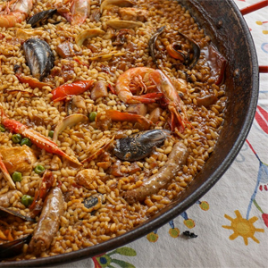

RECETA
Paella valenciana

PLATOS
La paella es uno de los platos más representativos de la gastronomía española, famosa por su arroz lleno de sabor y sus ingredientes frescos como mariscos, carne o verduras. Originaria de la costa mediterránea, combina tradición y sencillez en una receta que destaca por su color, aroma y carácter social, perfecta para compartir en buena compañía.
Historia
La paella es uno de los platos más representativos de España y tiene sus raíces en la Comunidad Valenciana, en la costa este del país. Originalmente, era una comida sencilla de los campesinos, elaborada con arroz, verduras locales y carne de conejo o pollo, cocinada al aire libre sobre fuego de leña. La paella surgió como una forma práctica de combinar ingredientes frescos y disponibles, creando un plato nutritivo y lleno de sabor.
Con el tiempo, la paella se convirtió en un símbolo de la gastronomía española y empezó a incorporarse en celebraciones y reuniones familiares. Cada localidad y familia desarrolló su propia versión, adaptando los ingredientes según la temporada y el entorno. Hoy, la Paella Valenciana se reconoce por su equilibrio entre arroz, verduras y carne, y por el característico toque de azafrán que le da su color dorado y aroma inconfundible.
Ingredientes
Descubre cómo preparar este icono gastronómico paso a paso y disfruta de la tradición de Valencia en tu mesa.
- 400 g de arroz bomba
- 200 g de pollo troceado
- 150 g de conejo troceado (opcional)
- 100 g de judía verde plana
- 100 g de garrofón
- 2 tomates maduros rallados
- 2 dientes de ajo
- 1 cucharadita de pimentón dulce
- Hebras de azafrán
- 1 litro de caldo de pollo o agua
- Aceite de oliva virgen extra
- Sal al gusto
- Limón
Cocinar paella
Cada zona de Valencia tiene su propia versión de la paella, adaptada a los ingredientes y tradiciones locales. Así encontramos paella valenciana con pollo y conejo, de marisco, mixta o incluso con verduras, cada una con su propio sabor y personalidad.
En el siguiente vídeo podrá descubrir paso a paso cómo preparar esta deliciosa receta.